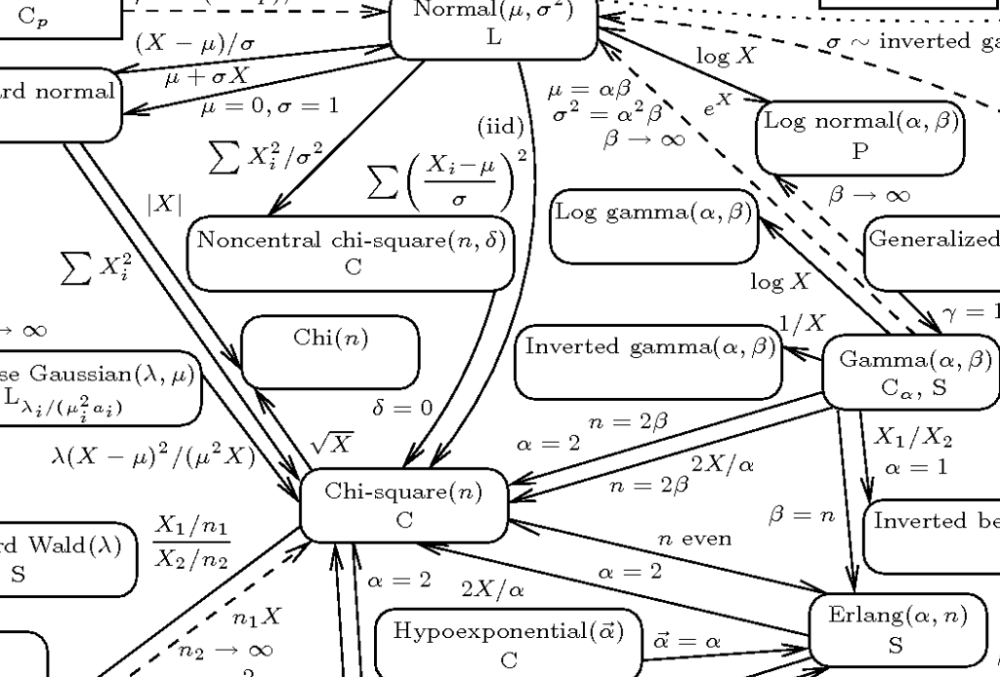
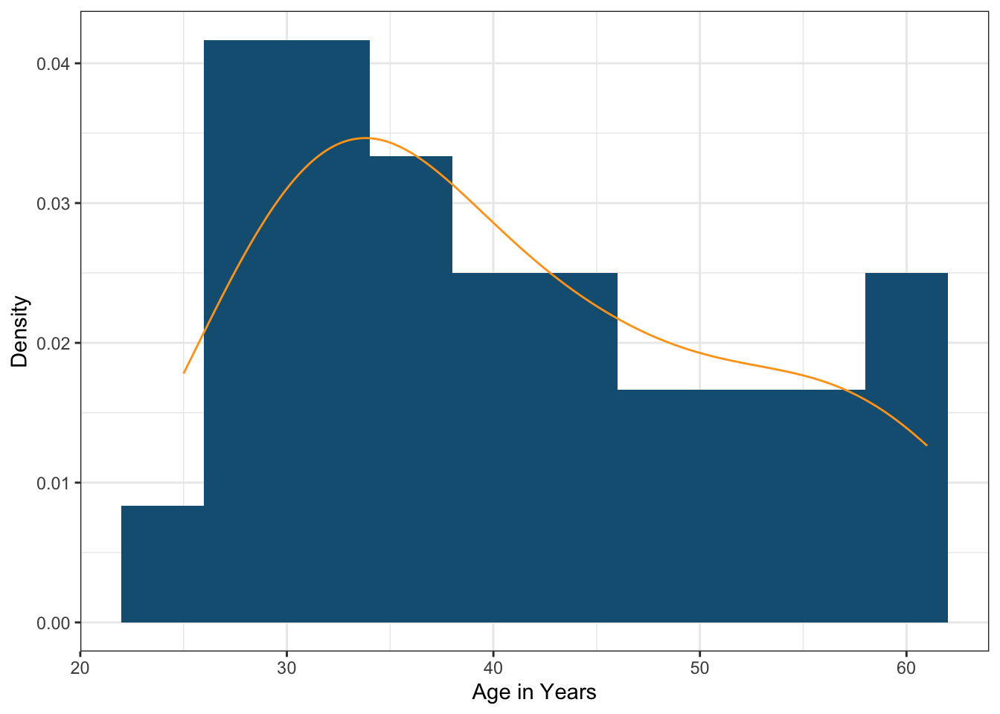
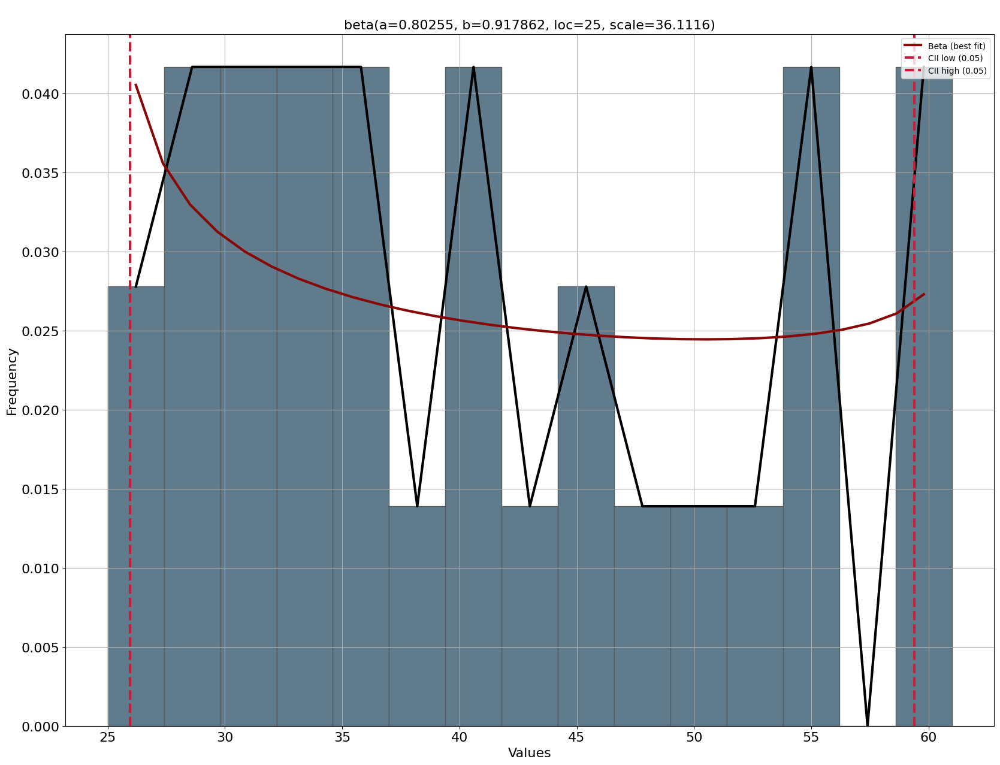
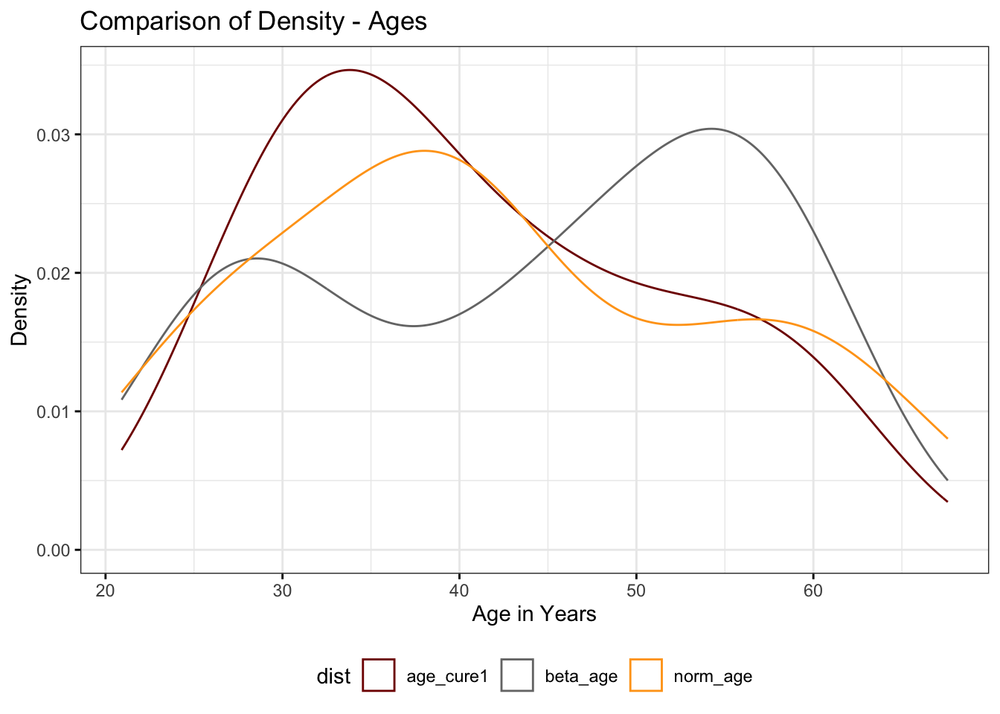

![]()
# choose 100 random values between 18 and 65
age <- runif(n = 100, min = 18, max = 65) 
I have been working for the past month on developing a synthetic dataset to support the clinical trial our laboratory is starting in our search for a cure for HIV. Clearly, curing HIV is an ambitious goal. Our previous clinical trials and experiments have given us confidence that our approach will move us forward.
What is a synthetic dataset? Why am I interested in such a thing?
A synthetic dataset is a set of hypothetical cases that mirror as closely as possible in silico (fancy word for on my computer) data that we are likely to collect from the real participants in our clinical trial. Synthetic datasets are useful when the process of collecting data is slow (our case) or the sample size is very restricted (as in the case of many animal model experiments where both ethics and cost limit how many animals can be sacrificed for an experimental result). In our case, we will replace our analyses conducted on the synthetic dataset with the results from the participants themselves.
The experimental protocol of any clinical trial tells us what variables will be collected. The synthetic dataset will use the same variables. Obviously, one can’t simply make the data up. However, you see exactly this frequently in texts, blog posts or statistical package manuals. The authors will show examples of data predicated on a set of normally or uniformly distributed data, such as in the following example.1
How we go about choosing data to use in a synthetic dataset requires more profound thinking for the set to be worthwhile. These values should mimic as closely as possible the real values we are likely to encounter in the clinical trial. We can only make values up out of whole cloth in a very few cases. Where do we find precedents for the variables we want to simulate? The principal source is prior studies or trials. They may not have the same objective or deal with exactly the same population as the real sample for the trial, but we need to make them “close enough” to make the analyses based on them reasonable approximations for the real data.
Importance of Domain Knowledge
The analyst will have to apply their domain knowledge to the data to achieve reasonable values. Someone who is trying to create synthetic variables without understanding the real world factors applicable to that variable is unlikely to produce useful values. Below, I will show how I go about simulating the ages of a potential panel of people living with HIV (“PLHIV”) in Brazil. I will discuss what we know from a previous study of a similar population, how that can be adjusted to reflect issues that were not included in the prior study, but are likely to play a part in a new study.
The Problem Here - Fitting a Numerical Variable
The dataset I am creating has both categorical and numerical variables. In this post, I will focus on a single numerical variable - the age of participants in years. Our new clinical trial will be limited to adults between 18 and 65 years – a common range for clinical trials. What I want to do is to specify the statistical distribution that best describes the ages of 70 people (our n). I can then use that distribution to predict the ages of my 70 synthetic participants in the study.
Our Precedent for the Age Variable
From 2017 - 2020, our lab conducted a smaller trial (30 individuals) of a similar strategy for HIV cure.2 I will refer to that study as Cure1 for convenience. Among the demographic variables about the participants in that trial, we recorded the age in years at the beginning of the trial. These values are a good place to start. They describe a similar population and we will be using them in the same way in the new study. The only difference in the protocols of the studies is that the earlier study only included men and the new study will include everyone.
Fitting a Distribution
One of the problems that data analysts confront regularly is how to describe a set of values, such as the Cure1 age variable. We can list the values. With only 30 cases that is reasonable, but I’m not sure how we draw conclusions from a simple, unordered list. However, with 100, 1,000, or 500,000 cases, listing doesn’t help us understand the data.
[1] 30 49 34 54 34 29 61 40 36 45 40 28 34 52 35 41 32 48 35 28 32 55 27 56 44
[26] 38 25 45 60 61We can summarize the data with measures of the centrality of the cases (their mean or median) and the variation around that central point as we normally do for variables.
Descriptive Statistics
age_cure1
N: 30
Mean Std.Dev Min Median Max N.Valid N Pct.Valid
--------------- ------- --------- ------- -------- ------- --------- ------- -----------
age_cure1 40.93 10.98 25.00 39.00 61.00 30.00 30.00 100.00We can also graph the data with a density curve or a histogram. This is an appealing idea and it helps us to see the overall trends in the variable. Intuitively, we get a greater degree of satisfaction from the image.

Distribution of the age_years Variable
As usually occurs, the density curve tells one story: the data appears sort of normally distributed with one peak. This idea is supported by the proximity of the mean and median in the table of summary values. However, the histogram suggests another story: that there may be a second peak, making the data bimodal and not likely normal (like most real-world data(Downey 2013)).
Testing Our Intuition about Normality
So a reasonable intuitive first guess about the type of data in the age variable is to treat it as normal. This is very attractive because we can create new cases using the probability density function of the normal curve using the mean and standard deviation.
Testing normality is also relatively straightforward. We can use either the Shapiro-Wilk or the Anderson-Darling tests of normality. In both cases, if the p-value of the test is less than a value we set, by custom 0.10 for normality tests, we reject the null hypothesis that the data are normal and consider that the normal distribution does not describe the data. Let’s try those with our data.
# Shapiro-Wilk
shapiro.test(age_cure1)
Shapiro-Wilk normality test
data: age_cure1
W = 0.93228, p-value = 0.05648# Anderson-Darling
nortest::ad.test(age_cure1)
Anderson-Darling normality test
data: age_cure1
A = 0.64476, p-value = 0.08372In both these tests, the age data does not appear to be normally, even for the more liberal Anderson-Darling test.
Now, what?
We can continue to test continuous distributions one-by-one and hope we find one that fits the pattern of our data. That’s not very efficient and depends on our knowledge of the different distributions that we can use. The illustration at the top of this post shows the complexity of the search. R does have a package that help you find a distribution that best fits your data. It does have a package, fitdistr,(Delignette-Muller and Dutang 2015) and a function within the modeling package MASS(Venables, Ripley, and Venables 2002) that assist in defining the parameter values for a distribution you choose. But, help at the basic level of finding a function, no joy from R. This is quite frustrating. Even those with a long experience with statistics and different distributions will worry that they did not test enough different distributions to find the best fit.
However, the Python language has a package, distfit, (Taskesen 2025) that actually helps the data grubber scientist out. distfit has functions that can search among a set of 10 “popular” continuous distributions3, that is, those that are more frequently used. You can also search among the full set the author has programmed, a whopping 68 different distributions. Here, we will work with the popular set for convenience.
| Normal | Generalized Extreme Value (GEV) |
| Exponential | Gamma |
| Pareto | LogNormal |
| Weibull | Beta |
| t | Uniform |
distfit compares the data of a variable to each of the distributions it is searching among, estimates the parameters it should use to make this comparison (a major improvement over the fitdistr approach), checks the goodness-of-fit and assigns a score to each distribution based on the goodness-of-fit result and ranks the distributions from best (lowest score) to worst (highest). With the popular distributions, this entire process takes about a second.
Fitting age_cure1 with distfit
I will take you through the distfit process for age_cure1. R and Quarto, the software that is helping me with this blog, can easily handle blocks of programming in Python, but that will be the subject for a separate blog post on multilingual programming for biomedical data analysis. Here I will show the blocks of Python code and the results statically, as figures. I did the calculations using a Jupyter notebook in Positron, the new IDE that I am also using for the blog.
First Step – Open Python and distfit
Obviously, you need a recent version of Python 3 (My version is 3.12.2). distfit makes use of functions from numpy, pandas and matplotlib, libraries (pythonese for packages) commonly used in data analysis. These steps assume you have previously set up the age_years variable in the cure1 dataset.
from distfit import distfit
# import numpy as np
import matplotlib.pyplot as plt
import pandas as pdSet up the distfit Object
The next step is to initialize a distfit object, which will contain the methods that the program will use to do the various calculations. There are a number of options you can choose at this point, including the number of bins for the histogram that the program will draw, and the method distfit should use to do its calculations. While this takes some reading of the manual for the program, usually the default “parametric” options will serve.
## create distfit object for age
age = cure1.age_years
dist = distfit(bins = 15)Fit the Data
Now, you will instruct distfit to fit the data to the distributions by applying its key function, fit_transform. It prints out by default its fitting process in a fairly ugly table and you can suppress that by applying the parameter verbose = 'off'. This information will still be available by printing the “summary” subsection of the results_age object.
## fit the data
results_age = dist.fit_transform(age, verbose = 'off')
results_age['summary']
# Print the best-fitting distribution
print("Best fitting distribution (default settings):", dist.model["name"])
# print the parameters for distribution
print("Parameters:", dist.model["params"])| name | score | loc | scale | arg | params | |
|---|---|---|---|---|---|---|
| 0 | beta | 0.0028 | 25.0 | 36.11162 | (0.8025498392820567, 0.9178616649673106) | (0.8025498392820567, 0.9178616649673106, 24.99… |
| 1 | uniform | 0.003086 | 25.0 | 36.0 | () | (25.0, 36.0) |
| 2 | gamma | 0.003121 | 23.671861 | 8.266671 | (2.088083794086531,) | (2.088083794086531, 23.671860572721016, 8.2666… |
| 3 | lognorm | 0.003483 | 16.360629 | 22.197751 | (0.4600824242349388,) | (0.4600824242349388, 16.360629455434452, 22.19… |
| 4 | genextreme | 0.003782 | 35.824969 | 8.722759 | (0.0022036972929905738,) | (0.0022036972929905738, 35.82496922660661, 8.7… |
| 5 | dweibull | 0.003907 | 39.071432 | 10.101049 | (1.4994902513440642,) | (1.4994902513440642, 39.07143209580082, 10.101… |
| 6 | pareto | 0.00408 | -4294967271.0 | 4294967296.0 | (269558617.63340104,) | (269558617.63340104, -4294967271.0, 4294967295… |
| 7 | expon | 0.00408 | 25.0 | 15.933333 | () | (25.0, 15.93333333333333) |
| 8 | loggamma | 0.004597 | -2655.155819 | 380.373447 | (1197.9723285969549,) | (1197.9723285969549, -2655.1558188017243, 380…. |
| 9 | norm | 0.00464 | 40.933333 | 10.797942 | () | (40.93333333333333, 10.797942190785962) |
| 10 | t | 0.00464 | 40.933326 | 10.797932 | (547125.3203099226,) | (547125.3203099226, 40.933325979689144, 10.797… |
The table I show above is slightly abbreviated from what the function produces. I’ve reduced the number of columns to those that provide the key data for making the decision about the best fitting distribution. The score parameter that ranks the distributions uses in this case the RSS (“residual sum of squares”) measure. distfit offers other minimization criteria that you will find in the documentation. The loc and scale columns are the mean and standard deviations for the variable. The arg and params columns are two ways of viewing the parameters that the distribution uses.
For example, the beta distribution has two parameters, \(\alpha\) and \(\beta\) that define the shape of the curve. These are the arguments in the arg column. The params column also provides the mean and standard deviation. You can see these below in the parameters item of the following output.
Best fitting distribution (default settings): beta
Parameters: (np.float64(0.8025498392820591), np.float64(0.9178616649673115), np.float64(24.999999999999996), np.float64(36.111620048509906))The “Best” Distribution
Using RSS as its scoring criterion, distfit has chosen the beta distribution as the best. The normal distribution that we started with ended up near the end of the list, followed only by its fatter-tailed first cousin, the t-distribution. I can note for you that this search took 0.1 seconds and that using a search of all 68 distributions took only 4.5 seconds on my Macbook Air M1 computer. Very impressive speeds that replace hours of trying various combinations one-by-one. distfit does permit you to search on one distribution at a time, but there seems little point in doing that since you will surely always have the doubt that the correct best distribution was the next one that you did not get around to exploring.
Graphic Representation of the Model Result
distfit also produces a graph of your result and shows the density of the beta distribution fit over a histogram of your data. It uses the plot method applied to your original dist object you created when you initiated distfit.
dist.plot()
While the aesthetics of the graph leave something to be desired, it provide the basic information that you require to understand how the beta distribution aligns with the data itself. What the beta distribution with these shape parameters does that the normal distribution did not do is to respect the reduced frequency of middle-aged participants.
Final Step – Create a Synthetic Age Variable
Still in Python, we can generate a beta_age variable, with 30 values based on the shape parameters in the model.
# values for the beta ages
beta_age = dist.generate(30)
beta_age
array([56.47165781, 26.1968943 , 30.23741717, 25.73025078, 27.28333767,
44.46038604, 51.92738027, 49.2519154 , 53.32698704, 43.2538978 ,
59.69370779, 56.47277826, 43.64740812, 28.26559417, 57.10120666,
44.10916069, 32.04016565, 58.28303322, 58.85480846, 38.64909928,
25.28190799, 25.17327387, 28.87948644, 58.28830534, 48.82959254,
48.63264843, 52.77739289, 58.40751967, 54.4263961 , 35.94172602])We can now return to R and use the beta parameters we discovered in distfit to create an age variable. We can also apply the shape parameters \(\alpha\) and \(\beta\) from distfit the rbeta function in R to generate values in R. However, R generates values for the beta distribution in the range of 0 to 1. We will need to adapt that range to the minimum and maximum values for age_cure1 to mimic the age range in the original variable.
We’ll wrap this up by comparing this variable with a variable created via the normal distribution4 and the original age_years variable.
Descriptive Statistics
age_set
N: 30
age_cure1 norm_age py_beta_age r_beta_age
--------------- ----------- ---------- ------------- ------------
Mean 40.93 42.17 44.06 42.40
Std.Dev 10.98 10.83 12.47 12.14
Min 25.00 15.39 25.17 25.00
Median 39.00 43.47 46.55 39.88
Max 61.00 58.09 59.69 61.00
N.Valid 30.00 30.00 30.00 30.00
N 30.00 30.00 30.00 30.00
Pct.Valid 100.00 100.00 100.00 100.00
Note on the Illustration at the Head of the Post
The diagram at the beginning of this post is a small piece of an extraordinary illustration of the relationship among a large number of statistical distributions that is the main element of an article in The American Statistician from 2008 by Leemis and McQueston, Univariate Distribution Relationships. ((Leemis and McQueston 2008)) that the first author has enshrined in a web page that explains in detail each of the distributions and how they relate one to the other (https://www.math.wm.edu/~leemis/chart/UDR/UDR.html). This is a very valuable resource for anyone who is dealing with this subject.
References
Delignette-Muller, Marie Laure, and Christophe Dutang. 2015. “Fitdistrplus : An R Package for Fitting Distributions.” Journal of Statistical Software 64 (4). https://doi.org/10.18637/jss.v064.i04.
Downey, Allen. 2013. “Are Your Data Normal? Hint: No.” https://allendowney.blogspot.com/2013/08/are-my-data-normal.html.
Leemis, Lawrence M, and Jacquelyn T McQueston. 2008. “Univariate Distribution Relationships.” The American Statistician 62 (1): 45–53. https://doi.org/10.1198/000313008X270448.
Taskesen, Erdogan. 2025. Distfit Is a Python Library for Probability Density Fitting. Zenodo. https://zenodo.org/doi/10.5281/zenodo.15712917.
Venables, W. N., Brian D. Ripley, and W. N. Venables. 2002. Modern Applied Statistics with s. 4th ed. Statistics and Computing. New York: Springer.
Footnotes
The examples here will generally be generated in the R statistical language as that is what I generally use. However, this post will contain Python code as well.↩︎
A definitive summary of this trial is currently in the process of being published.↩︎
distfitcan also search out the correct parameters for modeling discrete (categorical) variables with the searching method set to “discrete”.↩︎We remember that the parameters of the normal distribution are the mean and the standard deviation.↩︎
Citation
BibTeX citation:
@online{hunter2025,
author = {Hunter, James},
title = {Fitting {Distributions}},
date = {2025-08-10},
url = {https://jameshunterbr.github.io/posts/07-30-distribution-fitting/},
langid = {en}
}
For attribution, please cite this work as:
Hunter, James. 2025. “Fitting Distributions.” August 10,
2025. https://jameshunterbr.github.io/posts/07-30-distribution-fitting/.